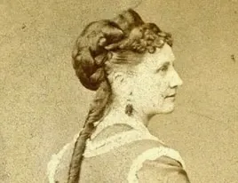

Ciência
Investigação experimental sobre a influência do CO₂ na variação de temperatura de uma superfície exposta à radiação infravermelha, com medições em tempo real.
Uma experiência sobre ciência esquecida e sustentabilidade — revisitando o experimento pioneiro de 1856 com materiais de baixo custo, sensor MLX90614 e ESP32.
Este trabalho revisita e adapta ao ambiente escolar o experimento realizado por Eunice Newton Foote em 1856, valorizando sua contribuição pioneira para a compreensão do efeito estufa e da relação entre a composição atmosférica e o aquecimento do planeta.
Investigação experimental sobre a influência do CO₂ na variação de temperatura de uma superfície exposta à radiação infravermelha, com medições em tempo real.
Resgate da trajetória de Eunice Foote, cientista e ativista pelos direitos das mulheres, cujo trabalho permaneceu invisibilizado por mais de um século.
Discussão sobre a intensificação do efeito estufa pelas atividades humanas e a urgência da redução das emissões de gases poluentes, alinhada ao ODS 13.
Uma atmosfera desse gás daria à nossa Terra uma temperatura elevada.Eunice Newton Foote Circumstances affecting the heat of the sun’s rays · 1856

1819 — 1888Em 1856, a norte-americana Eunice Newton Foote publicou o artigo Circumstances affecting the heat of the sun’s rays, no qual relatou experimentos com diferentes gases expostos à luz solar. Ela observou que o dióxido de carbono (CO₂) apresentava maior elevação de temperatura e permanecia aquecido por mais tempo que o ar comum — uma das primeiras observações científicas a relacionar esse gás ao aquecimento atmosférico.
Seu estudo foi apresentado na reunião da American Association for the Advancement of Science (AAAS) pelo físico Joseph Henry, em um contexto no qual a participação feminina na ciência era desencorajada. Anos depois, os trabalhos de John Tyndall receberam maior destaque, enquanto o nome de Foote permaneceu apagado por mais de um século.
Resgatar sua trajetória é reconhecer que a ciência é construída por pessoas de diferentes épocas e contextos — e que visibilizar as mulheres na produção do conhecimento é parte essencial do fazer científico.
Do experimento pioneiro de Foote ao resgate de sua trajetória.
Foote publica Circumstances affecting the heat of the sun’s rays, apresentado na AAAS por Joseph Henry.
John Tyndall investiga de forma mais direta a absorção da radiação infravermelha por gases como H₂O e CO₂.
O nome de Foote permanece pouco conhecido, enquanto os trabalhos de Tyndall ganham maior destaque.
Ortiz e Jackson publicam uma análise dos experimentos de Foote de 1856 na revista da Royal Society.
O efeito estufa é um fenômeno natural essencial à vida na Terra: parte da energia térmica fica retida na atmosfera e ajuda a regular a temperatura do planeta. O problema está na sua intensificação pelas atividades humanas.
A radiação solar atravessa a atmosfera e aquece a superfície terrestre.
A superfície aquecida reemite parte da energia como radiação infravermelha de onda longa.
Os gases de efeito estufa absorvem parte dessa radiação e a reemitem, inclusive de volta à superfície.
Por que importa: o aumento do CO₂ decorre principalmente da agropecuária, da queima de combustíveis fósseis, do desmatamento e de processos industriais.
Baseado no protótipo de Junges et al. (2020), o sistema compara o comportamento térmico do ar atmosférico e do CO₂ dentro de uma célula exposta à radiação infravermelha, com leituras contínuas a cada 0,05 segundo.
Lata de aço de 1 L isolada com papel-bolha e alumínio, com extremidades vedadas por filme termo-retrátil. Sensor MLX90614 posicionado a 10 cm e lâmpada de 250 W a 20 cm.
O gás é gerado externamente pela reação entre bicarbonato de sódio e ácido acético (vinagre a 4 %), conduzido à célula por mangueira e válvula pneumática.
Cada condição é exposta por 90 segundos à radiação, com resfriamento de 6 a 7 minutos entre as etapas. Os dados são exibidos em tempo real na plataforma.
Em dois dos três ensaios, a condição com introdução de CO₂ apresentou temperatura final superior à do ar atmosférico. O primeiro teste, tratado como piloto, apresentou comportamento contrário e foi excluído da comparação principal.
Limitações: a concentração final de CO₂ não pôde ser medida experimentalmente; perdas de gás, trocas de calor com o ambiente e diferenças de vedação podem influenciar principalmente ensaios com pequenas diferenças de temperatura.
A plataforma de monitoramento recebe a temperatura do sensor MLX90614 via WebSocket, exibe as curvas das duas cápsulas durante a apresentação e permite reproduzir o ensaio completo.
Instituto Federal de Ciência, Educação e Tecnologia da Bahia — Campus Irecê